News
► [NEW!] [Oct. 2024] 2 papers accepted by NeurIPS 2024.
► [NEW!] [July 2024] 2 papers accepted by ECCV 2024.
► [NEW!] [Jan. 2024] 1 papers accepted by 3DV 2024.
► [NEW!] [Nov. 2023] Our video super-resolution project #ProjResUp was presented at Adobe Max 2023 (Sneak Peak) [Youtube Link] [Press]
► [NEW!] [Nov. 2023] Our paper 3D generation foundation model "LRM: Large Reconstruction Model for Single Image to 3D" has been accepted by ICLR 2023.
► [Oct. 2023] 2 papers accepted by ICCV 2023.
► [Oct. 2022] 1 paper accepted by SIGGRAPH ASIA 2022.
► [Oct. 2022] 2 papers accepted by ECCV 2022.
► [Jun. 2022] 2 papers accepted by CVPR 2022.
► [May 2021] Start my new journey at Adobe Research as a full-time research scientist.
► [Mar. 2021] Gave a talk on deep learning architectures for character animation at Intelligent Graphics Lab, Chinese Academy of Sciences.
► [Nov. 2020] Our summer intern project #OnTheBeatSneak was presented at Adobe MAX 2020 (Sneak Peek). [Quick Look] [Full Youtube Link] [Press]
► [Aug. 2020] Our paper MakeItTalk accepted by SIGGRAPH ASIA 2020. [Video]
► [Nov. 2019] Our summer intern project #SweetTalkSneak was presented at Adobe MAX 2019 (Sneak Peek). [Youtube Link] [Press]
► [Aug. 2019] Our paper on Animation Skeleton Prediction accepted by 3DV 2019.
► [Jul. 2019] Our paper SceneGraphNet accepted by ICCV 2019.
► [Jun. 2019] Joined Adobe CIL (Seattle) as a summer intern.
► [Jun. 2018] Joined Wayfair Next Research as a summer intern and fall co-op intern.
Publications
Video Generation and Visual Effects
 |
Desai Xie, Zhan Xu, Yicong Hong, Hao Tan, Difan Liu, Feng Liu, Arie Kaufman, Yang Zhou Arxiv 2024 PDF Project |
 |
Ren, Yixuan, Yang Zhou, Jimei Yang, Jing Shi, Difan Liu, Feng Liu, Mingi Kwon, and Abhinav Shrivastava ECCV 2024 PDF Project |
| 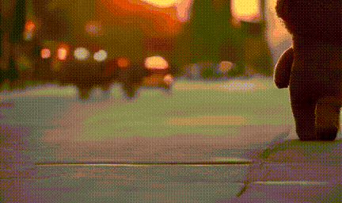 | Mingi Kwon, Seoung Wug Oh, Yang Zhou, Joon-Young Lee, Difan Liu, Haoran Cai, Baqiao Liu, Feng Liu, Youngjung Uh ECCV 2024 PDF Project |
| 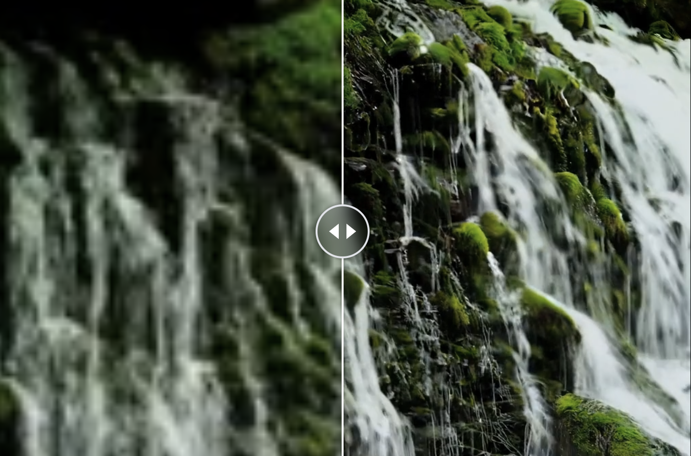 | Xu, Yiran, Taesung Park, Richard Zhang, Yang Zhou, Eli Shechtman, Feng Liu, Jia-Bin Huang, and Difan Liu Arxiv 2024 PDF Project |
| 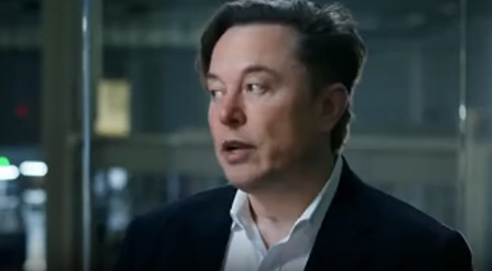 | Wang, Xiaojuan, Taesung Park, Yang Zhou, Eli Shechtman, and Richard Zhang Arxiv 2024 PDF Project |
| 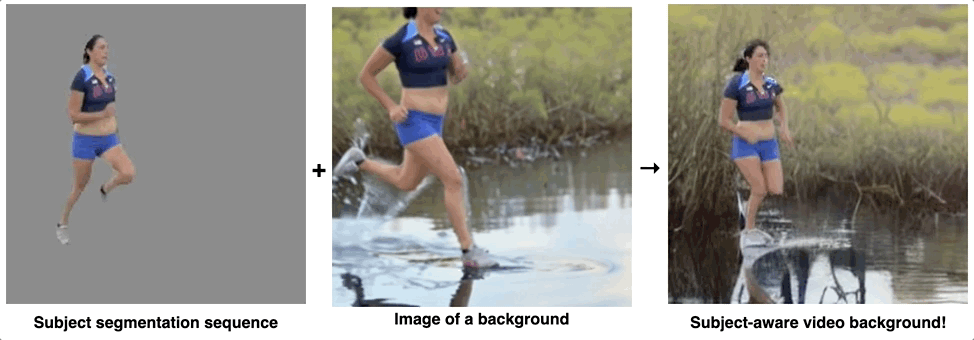 | Pan, Boxiao, Zhan Xu, Chun-Hao Paul Huang, Krishna Kumar Singh, Yang Zhou, Leonidas J. Guibas, and Jimei Yang NeurIPS 2024 PDF Project |
| 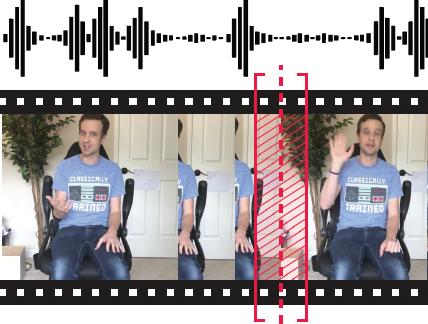 | Yang Zhou, Jimei Yang, Dingzeyu Li, Jun Saito, Deepali Aneja, and Evangelos Kalogerakis CVPR 2022 PDF Project |
Digital Human and Characters
| 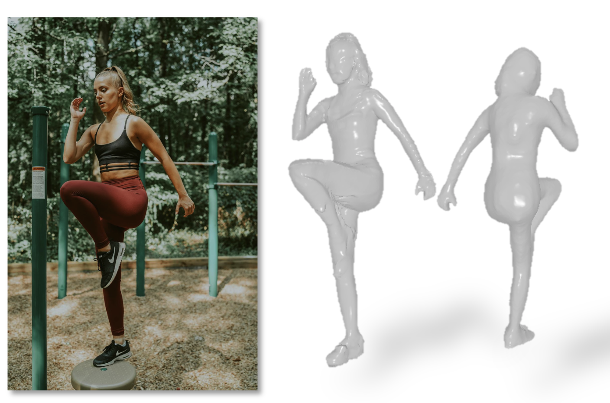 | Weng, Zhenzhen, Jingyuan Liu, Hao Tan, Zhan Xu, Yang Zhou, Serena Yeung-Levy, and Jimei Yang Arxiv 2024 PDF Project |
| 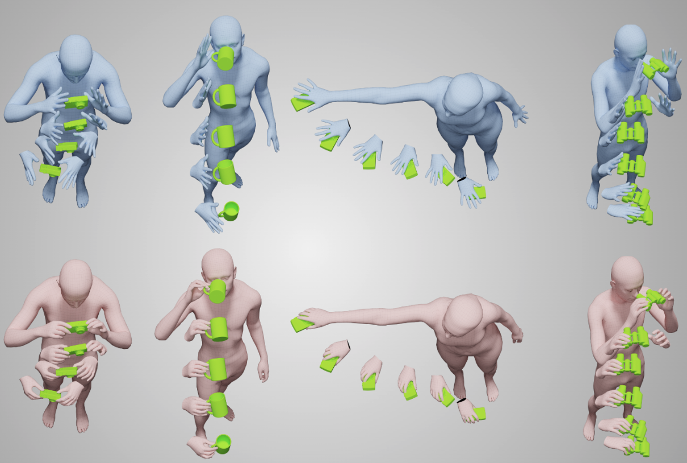 | Taheri, Omid, Yi Zhou, Dimitrios Tzionas, Yang Zhou, Duygu Ceylan, Soren Pirk, and Michael J. Black. 3DV 2024 PDF Project |
| 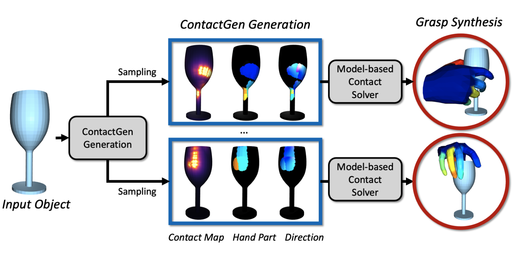 | Liu, Shaowei, Yang Zhou, Jimei Yang, Saurabh Gupta, and Shenlong Wang ICCV 2023 PDF Project |
| 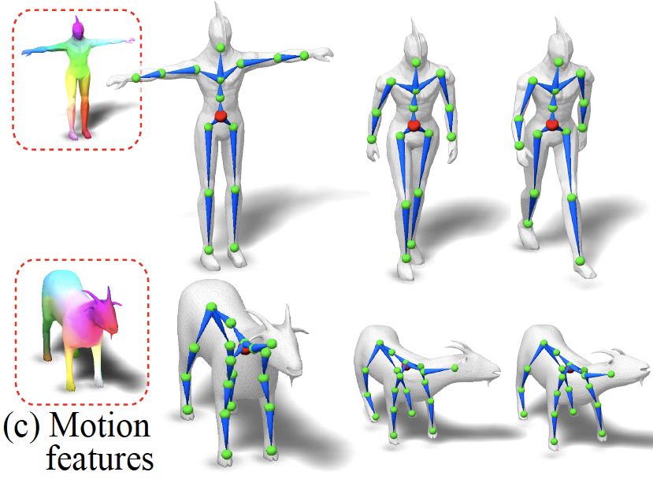 | Zhan Xu, Yang Zhou, Li Yi, and Evangelos Kalogerakis SIGGRAPH ASIA 2022 PDF Project |
| 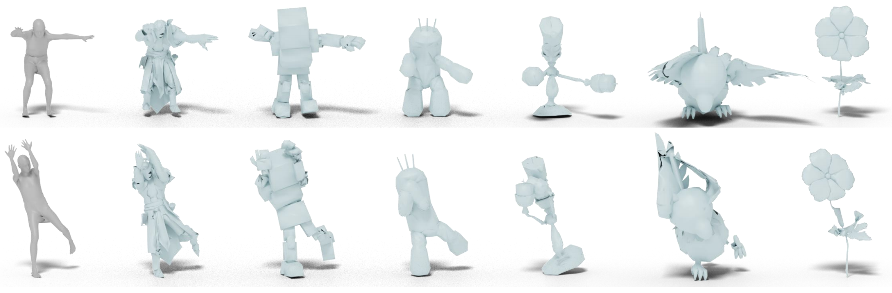 | Zhouyingcheng Liao, Jimei Yang, Jun Saito, Gerard Pons-Moll, and Yang Zhou ECCV 2022 PDF Project |
| 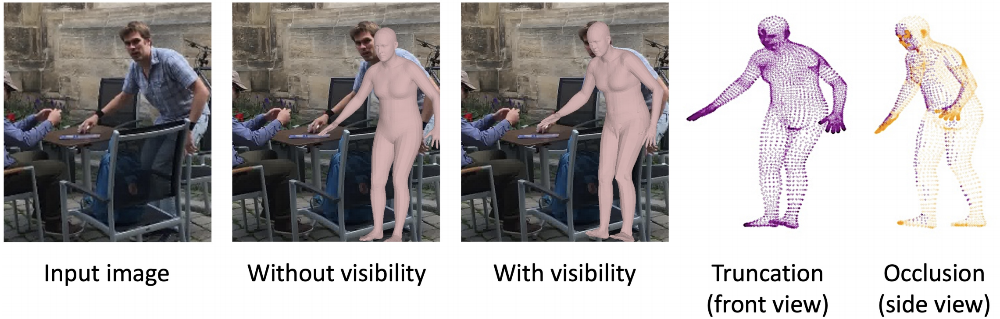 | Chun-Han Yao, Jimei Yang, Duygu Ceylan, Yi Zhou, Yang Zhou, and Ming-Hsuan Yang ECCV 2022 PDF Project |
| 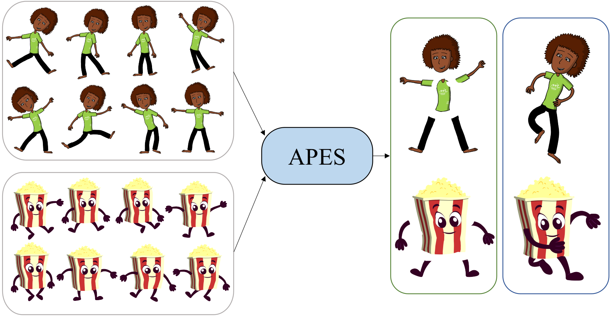 | Zhan Xu, Matthew Fisher, Yang Zhou, Deepali Aneja, Rushikesh Dudhat, Li Yi, and Evangelos Kalogerakis CVPR 2022 PDF Project |
| 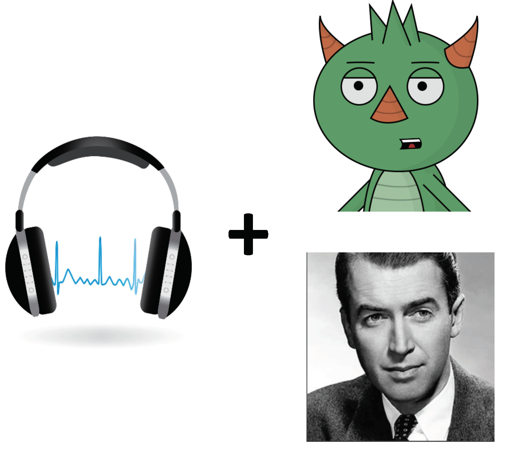 | Yang Zhou, Xintong Han, Eli Shechtman, Jose Echevarria, Evangelos Kalogerakis, and Dingzeyu Li SIGGRAPH ASIA 2020 PDF Project Video 1 Video 2 |
| 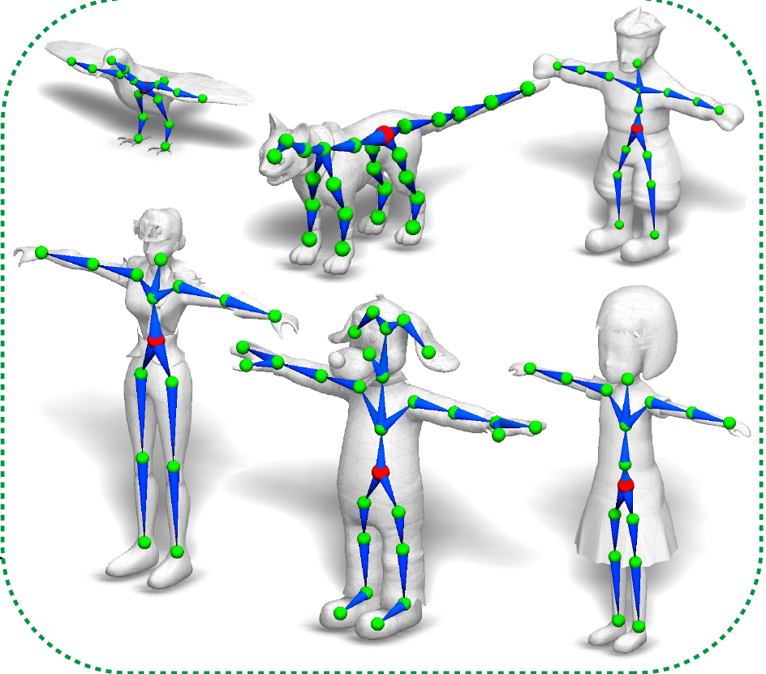 | Zhan Xu, Yang Zhou, Evangelos Kalogerakis, Chris Landreth, and Karan Singh SIGGRAPH 2020 PDF Project |
| 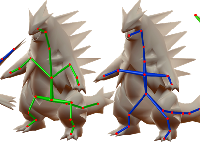 | Zhan Xu, Yang Zhou, Evangelos Kalogerakis, and Karan Singh. 3DB 2019 PDF Project |
| 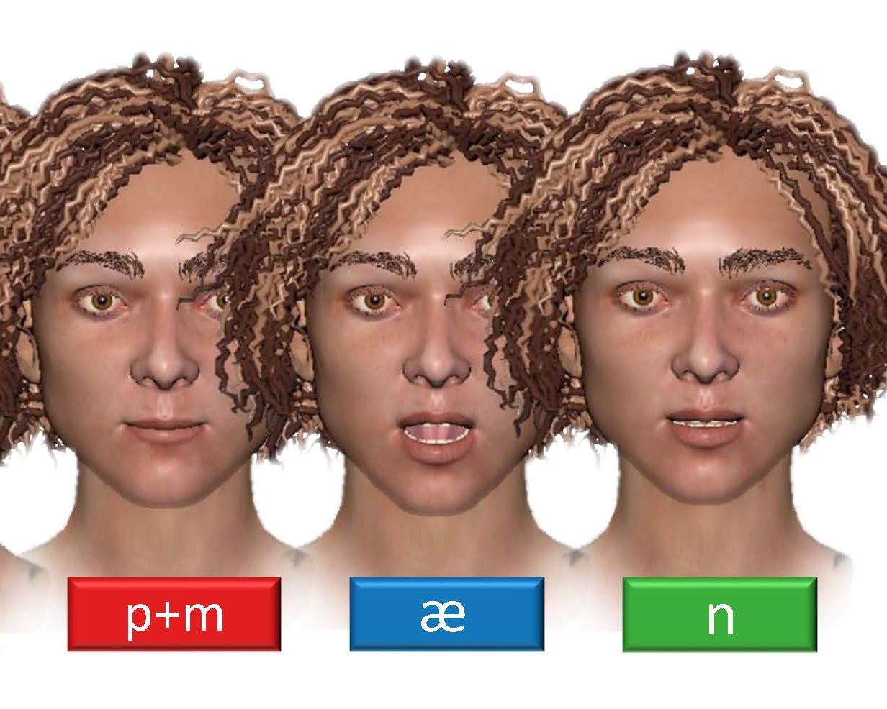 | Yang Zhou, Zhan Xu, Chris Landreth, Subhransu Maji, Evangelos Kalogerakis, and Karan Singh SIGGRAPH 2018 PDF Project |
3D Object and Scene Synthesis
| 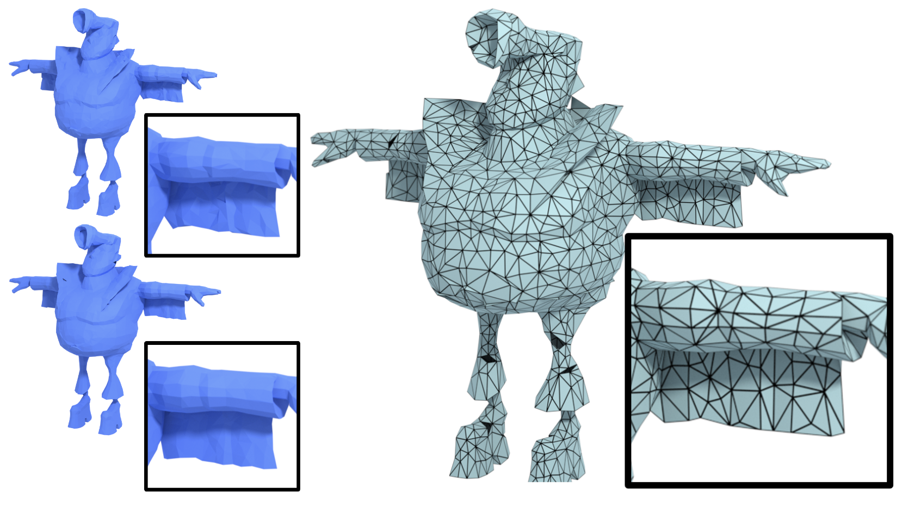 | Sanghyun Son, Matheus Gadelha, Yang Zhou, Zexiang Xu, Ming Lin, Yi Zhou NeurIPS 2024 PDF Project |
| 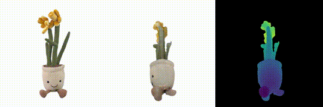 | Hong, Yicong, Kai Zhang, Jiuxiang Gu, Sai Bi, Yang Zhou, Difan Liu, Feng Liu, Kalyan Sunkavalli, Trung Bui, and Hao Tan ICLR 2024 PDF Project |
| 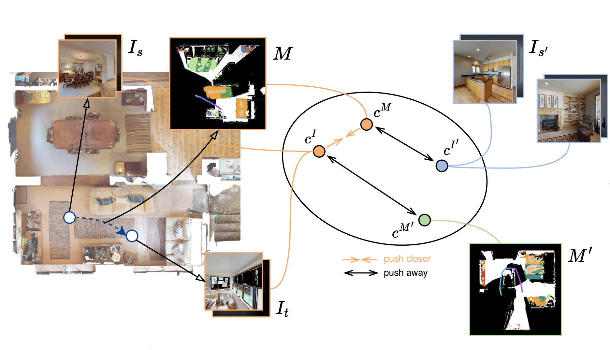 | Hong, Yicong, Yang Zhou, Ruiyi Zhang, Franck Dernoncourt, Trung Bui, Stephen Gould, and Hao Tan ICCV 2023 |
| 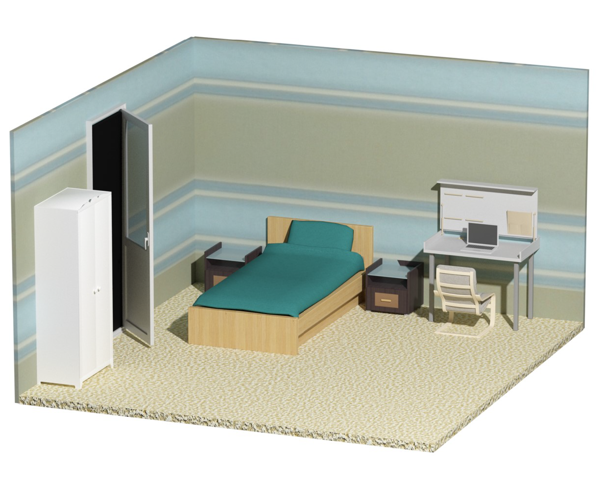 | Yang Zhou, Zachary While, and Evangelos Kalogerakis ICCV 2019 PDF Project |
Experience
Adobe, Inc | Media Intelligent Lab
May 2021 | Research ScientistWorking on various research projects including video generation, digital human, 3D generation, etc.
Adobe, Inc | Media Intelligent Lab
June, 2020 | InternCollaborate with researchers on 3D facial/skeleton animations based on deep learning approaches.
Our intern project #OnTheBeatSneak was presented at Adobe MAX 2020 (Sneak Peek).
Adobe, Inc | Creative Intelligence Lab
June, 2019 | InternCollaborate with researchers on audio-driven cartoon and real human facial animations and lip-sync technologies based on deep learning approaches.
Our intern project #SweetTalk was presented at Adobe MAX 2019 (Sneak Peek).
Wayfair, Inc | Wayfair Next Research
June, 2018 | Research InternWorking on 3D scene systhesis based on deep learning approaches.
NetEase Game, Inc
June, 2015 | Management TraineeWorking on mobile game design, especially on profit models and user-experiences.
Contact Me
Best way to reach me is to send an Email